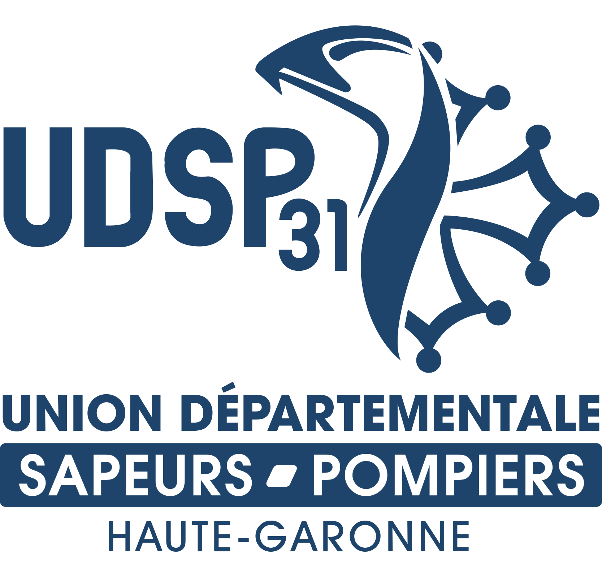

05 62 13 20 22
udsp31@gmail.com
Union Departementale des Sapeurs-Pompiers de Haute-Garonne

Ouvrir le menu
Accueil
L'UDSP31
Decouvrir l'UDSP 31
Le bureau executif
Les commissions
Secourisme
Jeunes Sapeurs-Pompiers
Sapeurs-Pompiers volontaires
Sapeurs-Pompiers professionnels
Service de sante et de secours medical
Dispositif previsionnel de secours
Social
Sport
Anciens Sapeurs-Pompiers
Nos services
Formation
Dispositif Previsionnel de Secours
Devenir pompier
Devenir Pompier volontaire
Devenir Pompier Professionnel
Devenir Jeune Sapeur-Pompier
Se former